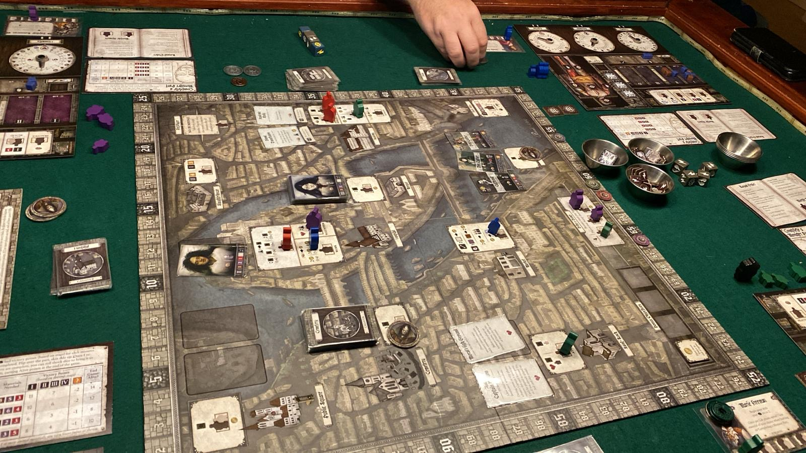
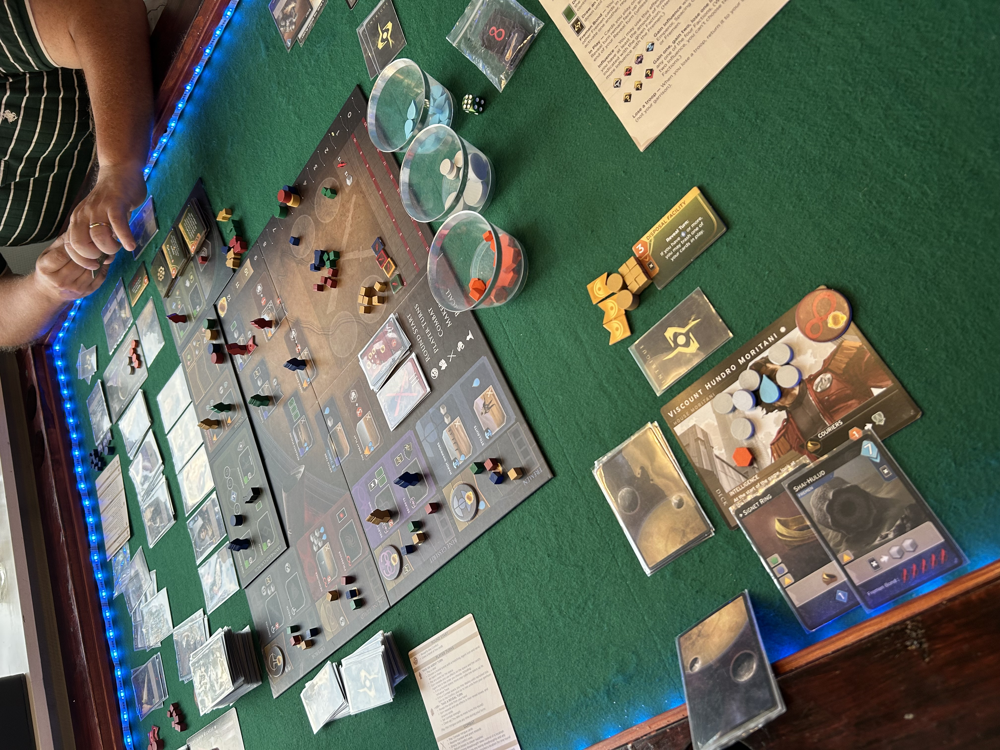
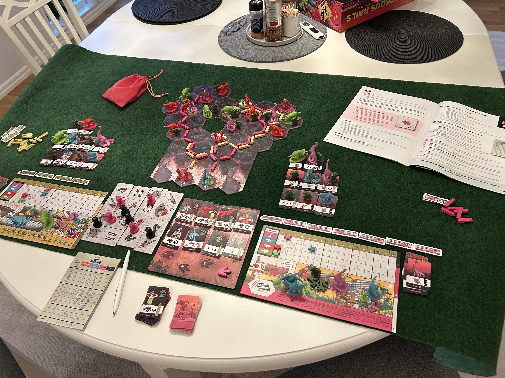
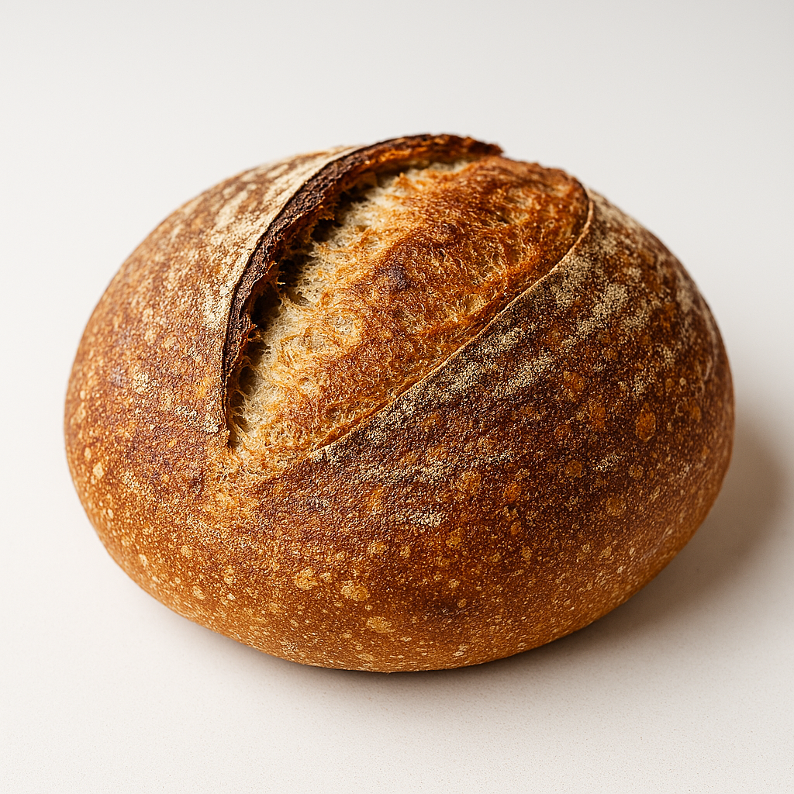
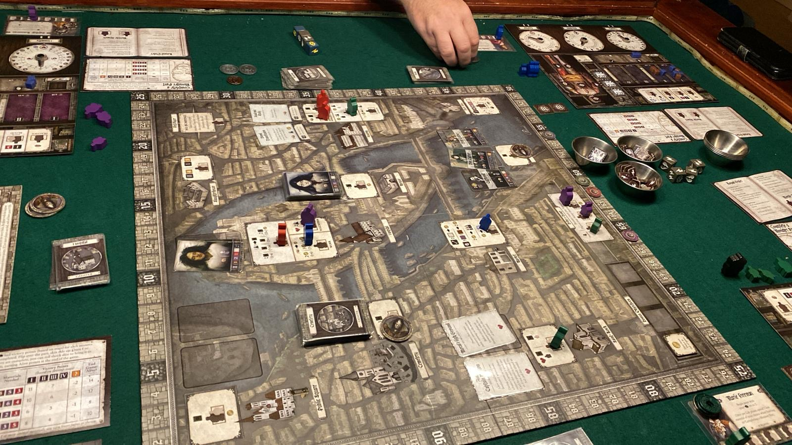
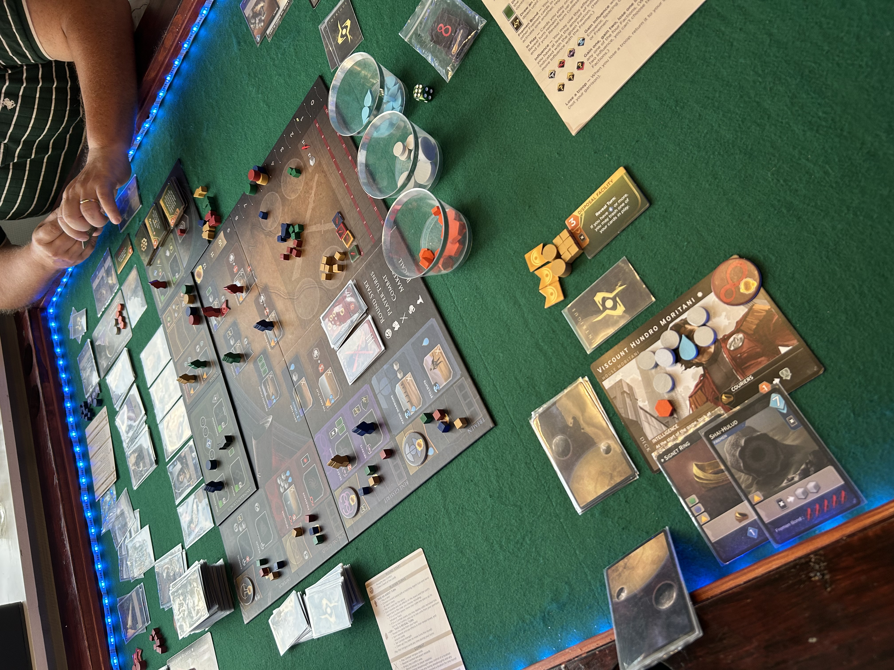
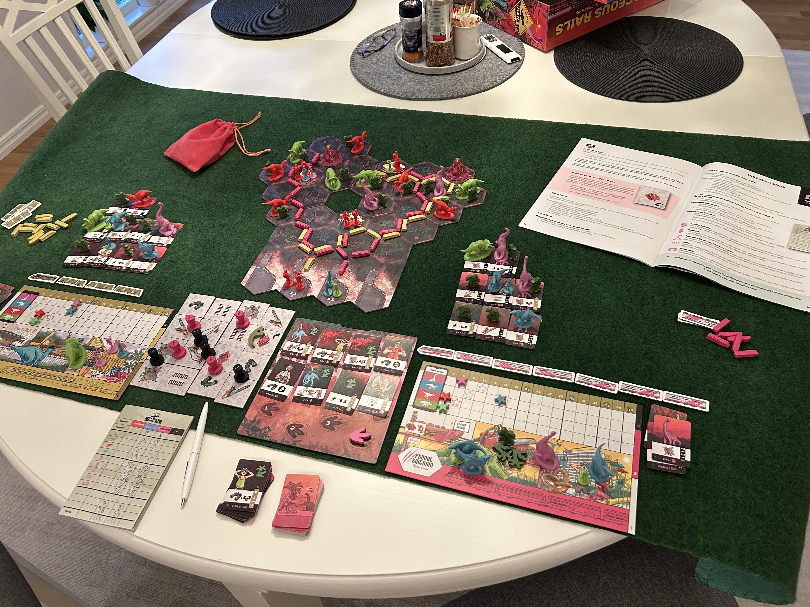

White Castle

Tender your garden, Train the troops and Court the Emperor
Abomination, the heir of Frankenstein
Kinda strong theme
Dune: Imperium
Ride the Worm!
Cretaceous Rails
Dinosaurs and trains, what else do you need?
In my spare time, I enjoy a few hobbies that help me relax and stay creative. Here are my favorite pastimes:
Baguettes, English Christmas cake or Sourdough - I love it!
I love playing board games with friends and family. It's a fun way to challenge my strategic thinking and spend quality time with loved ones.
White Castle
Tender your garden, Train the troops and Court the Emperor
Abomination, the heir of Frankenstein
Kinda strong theme
Dune: Imperium
Ride the Worm!
Cretaceous Rails
Dinosaurs and trains, what else do you need?